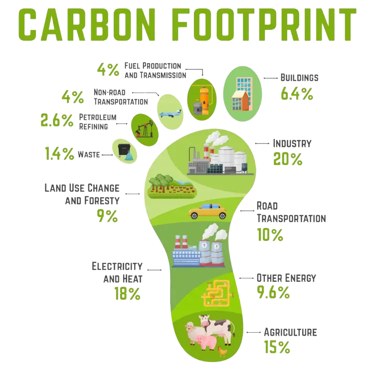

Measure your footprint
Bring household energy, transport, food and waste into one annual estimate, with the assumptions made clear.
PERSONAL CARBON FOOTPRINT CALCULATOR
Measure the estimated greenhouse-gas emissions associated with your everyday choices, understand where they come from, and identify practical ways to reduce your impact.

WHY IT MATTERS
A carbon footprint represents the greenhouse-gas emissions associated with activities such as using electricity, travelling, consuming food, and generating waste.
Bring household energy, transport, food and waste into one annual estimate, with the assumptions made clear.
Explore category shares, activity-level calculations, emission factors and the sources behind the estimate.
Adjust individual activities in the reduction planner and see how realistic changes affect your estimate.
PERSONAL CALCULATOR
Enter information about your household energy, transportation, food consumption, and waste. Your result will be an estimated annual footprint.
YOUR RESULT
PDF for sharing, CSV for spreadsheet analysis.
Your estimated annual greenhouse-gas emissions.
Assumes each household member has the same food and transport footprint.
YOUR EMISSIONS, VISUALLY
Select a category to inspect its share and estimated annual emissions.
Choose any category to see how much it contributes to your annual estimate.
Guest calculation · Your answers are used only to calculate this result. CarbonLens does not save them.
WHAT-IF SCENARIOS
Adjust individual activities to see how specific changes affect your annual estimate.
Your largest emission category will be identified after calculation.
Your entered activities will appear here after calculation.
Each activity slider models a proportional reduction in that activity. This is a scenario, not a guaranteed forecast.
TRANSPARENT METHODOLOGY
Open a category to inspect its activity data, emission factor and arithmetic.
BREAKDOWN
Low-confidence disposal proxy shown separately. It is not part of the energy, transport and food total.
CARBONLENS INTELLIGENCE
Your category analysis will appear here.
Complete the calculator to receive a tailored action.
These are rule-based suggestions generated from your category totals, not a live AI assessment or a verified reduction forecast.
Your result is calculated using activity data and documented emission factors. Different emission factors can use different system boundaries, assumptions, and geographic conditions, so the result should be treated as an estimate rather than a precise measurement.
METHODOLOGY
Important: CarbonLens combines factors with different geographic scopes and greenhouse-gas coverage. Electricity, fuel combustion, Indian rail and intracity bus factors are CO₂-only proxies; food uses global lifecycle CO₂e averages; aviation uses UK government CO₂ + CH₄ + N₂O factors that exclude distance and radiative-forcing uplifts. Experimental household-waste proxies are displayed separately and excluded from the headline total because disposal methods and local factors are not sufficiently modelled. The result is a partial indicative estimate, not a verified, fully India-specific or harmonised CO₂e inventory. Confidence labels describe source quality and applicability: high = strong source for the stated activity and region; medium = published factor with limitations; low = context-specific proxy.
CarbonLens uses activity data and emission factors to estimate greenhouse-gas emissions.
We collect information such as electricity consumption, travel distance, food consumption, and waste generation.
Each activity is multiplied by an appropriate emission factor to estimate its greenhouse-gas emissions.
Some factors include multiple greenhouse gases, while several operational factors currently represent CO₂ only. The result preserves these limitations rather than implying full coverage.
Your estimated emissions are grouped into major categories so you can understand where the largest contributions come from.
ABOUT CARBONLENS
CarbonLens is designed to make personal carbon accounting easier to understand. Instead of giving you a single unexplained number, the calculator breaks your estimated footprint into major sources so you can understand what is driving it.
The project focuses on transparency, clear assumptions, responsive design, and understandable calculations.